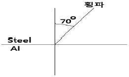
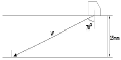

초음파비파괴검사산업기사 (2016-03-06 기출문제)
1과목: 비파괴검사 개론
1. 이원성 침투액에 대한 설명으로 틀린 것은?
- 검사에 사용되는 자외선은 파장이 100nm 이하이다.
- 자연광이나 암실의 자외선 하에서 검사할 수 있다.
- 상대적으로 일반 침투액에 비하여 색상이 떨어진다.
- 색상은 일반적으로 염색에는 적색이, 형광에는 형광오렌지색이 사용된다.
(정답률: 70%)

2. 자분탐상검사에서 시험체를 시험하기 전에 전처리를 해야 하는 중요한 목적이 아닌 것은?
- 검사액의 오염 방지
- 의사모양의 발생 차단
- 결함검출능력 저하 방지
- 누설자속 발생 저해 증가
(정답률: 71%)
3. 비파괴시험의 실시 목적으로 옳은 것은?
- 비파괴시험은 재료나 부품, 구조물 등을 파괴하는 것도 포함하며, 결함이나 내부 구조 등을 조사하는 시험이다.
- 비파괴시험으로 결함을 검출하는 경우 결함의 합ㆍ부 기준을 명확히 하고, 적절한 시험방법과 시험조건을 선정하지 않으면 안된다.
- 비파괴시험의 주목적은 대량 생산의 향상에 있다.
- 비파괴시험에서 원리적인 차이는 검출 정도에 영향을 미치지 않으므로 어떤 방법을 이용할 것인가에 대해서는 검토하지 않아도 된다.
(정답률: 86%)
4. 다음 중 초음파탐상시험에서 탐상결과의 신뢰성을 향상 시키기 위한 방법으로 적절하지 않은 것은?
- 장치의 성능 향상
- 주관적인 기술 확보
- 장치의 조정 정확성
- 탐촉자 주사방법의 정확성
(정답률: 87%)
5. 누설검사의 원리와 가장 가까운 비파괴 검사법은?
- 자분탐상시험
- 방사선투과시험
- 침투탐상시험
- 초음파탐상시험
(정답률: 80%)
6. 취성에 대한 설명으로 틀린 것은?
- 적열취성 : S 는 적열취성을 방지한다.
- 뜨임취성: Mo 은 뜨임취성을 방지한다.
- 상온취성 : P을 함유한 강에서 나타난다.
- 청열취성: 탄소강에서 약 200 ∼ 300℃ 구역에서 발생한다.
(정답률: 67%)
7. 알루미늄합금의 열처리에서 질별 기호 중 O 가 표시하는 것은?
- 어닐링한 것
- 가공 경화한 것
- 용체화 처리한 것
- 제조한 그대로의 것
(정답률: 80%)
8. 다음 소성가공 중 비절삭가공에 해당되는 것은?
- 선반가공
- 압연가공
- 밀링가공
- 드릴링가공
(정답률: 84%)
9. 오스테나이트 구조를 가지고 있는 γ-Fe 의 격자구조는?
- HCP
- FCC
- BCC
- BCT
(정답률: 76%)
10. 다음 중 Naval brass에 대한 설명으로 옳은 것은?
- 7 : 3 황동에 주석을 첨가한 합금으로 증발기, 열교환기 등에 사용한다
- 95%Cu-5%Zn 합금으로 coining을 하기 쉬우므로 화폐, 메달 등에 사용한다.
- 80%Cu-20%Zn 합금으로 전연성이 좋고 색깔이 아름다워 장식용 등으로 사용한다.
- 6 : 4 황동에 주석을 첨가한 합금으로 판, 봉 등으로 가공되어 용접봉, 복수기판 등에 사용한다.
(정답률: 62%)
11. 스테인리스강에 대한 설명으로 옳은 것은?
- 마텐자이트계 스테인리스강은 18%Cr - 8%Ni이 대표적이다.
- 페라이트계 스테인리스강은 일반적으로 풀림 상태에서 내식성이 가장 나쁘다.
- 오스테나이트계 스테인리스강의 예민화를 방지하기 위해서 탄소함량을 높이는 것이 좋다.
- 오스테나이트계 스테인리스강의 강화는 열처리보다 냉간가공에 의한 것이 효과적이다.
(정답률: 59%)
12. 다음 제진재료나 제진합금에 대한 설명 중 틀린 것은?
- 제진성능은 외부 마찰에 기인한다.
- 제진합금은 감쇠능을 겸비하여야 한다.
- 대표적 합금으로는 Mg-Zr, Mn-Cu 등이 있다.
- 제진이란 진동발생원인 고체의 진동자를 감소시키는 것을 말한다.
(정답률: 50%)
13. 주철에 있어 흑연화 작용이 가장 큰 원소는?
- Ti
- Cr
- Ni
- Si
(정답률: 68%)
14. 다음 중 탄소 함유량이 가장 많은 것은?
- 순수철
- 암코철
- 공석강
- 공정주철
(정답률: 69%)
15. 비정질합금의 특성을 설명한 것 중 틀린 것은?
- 구조적으로 장거리의 규칙성이 없다.
- 불균질한 재료이고 결정이방성이 존재한다.
- 전기저항이 크고 그 온도의 의존성은 작다.
- 강도가 높고 연성도 크나 가공경화는 일으키지 않는다.
(정답률: 42%)
16. 피복 아크 용접 시 아크전압이 30V, 아크전류가 150A, 용접속도가 10cm/min일 때 용접의 단위 길이 1cm당 발생하는 전기적 에너지 즉, 용접 입열량은 몇 J/cm 인가?
- 17000
- 27000
- 37000
- 47000
(정답률: 74%)
17. 용접 용어 중 용접할 때 아크열에 의하여 용융된 모재부분이 오목 들어간 곳을 뜻하는 것은?
- 피닝
- 용융 풀
- 용입
- 용착부
(정답률: 76%)
18. 용접사의 기량 미숙으로 인해 발생되는 결함과 가장 관계가 적은 것은?
- 오버랩
- 언더컷
- 라미네이션
- 슬래그 섞임
(정답률: 80%)
19. 피복 아크 용접용 기구에 해당되지 않는 것은?
- 접지 클램프
- 용접봉 홀더
- 케이블 커넥터
- 플래시 버트
(정답률: 77%)
20. 용접작업에서 지그 사용 시 이점에 대한 설명 중 틀린 것은?
- 용접능률이 감소된다.
- 용접부의 신뢰성을 높인다.
- 제품의 정밀도를 높일 수 있다.
- 동일한 제품을 다량 생산할 수 있다.
(정답률: 79%)
2과목: 초음파탐상검사 원리 및 규격
21. 용접부의 경사각탐상에 대한 설명으로 옳은 것은?
- 일반적으로 루트 용입부족은 블로홀보다 에코높이가 높다.
- 내부 용입부족은 루트 용입부족에 비해 에코높이가 현저히 높다.
- 균열은 면상결함으로 블로홀보다 항상 높은 에코높이를 나타낸다.
- 슬래그 개재물은 내부 용입부족과 동일한 에코형태를 나타낸다.
(정답률: 44%)
22. 초음파 탐상기에서 원하는 반사파만을 나타낼 수 있도록 일정한 구간 또는 일정한 진폭을 갖는 펄스만을 선택할 수 있는 회로는?
- 타이머(Timer) 회로
- 펄스(Lulse) 회로
- 소인(Sweep) 회로
- 게이트(Gate) 회로
(정답률: 60%)
23. 초음파 탐상장치를 사용하기 전에 탐상기기가 정상인지의 여부만을 점검할 목적으로 사용하는 점검방법은?
- 특별점검
- 일상점검
- 정기점검
- 교정점검
(정답률: 85%)
24. 다음 설명 중 접촉매질을 사용하는 목적으로 거리가 먼 것은?
- 탐촉자와 시험체 사이의 공기를 제거하기 위함이다.
- 탐촉자와 시험체 사이의 음향임피던스를 조화시키기 위함이다.
- 탐촉자와 시험체 사이를 채워 표면을 균일하게 하기 위함이다.
- 시험체의 탐상시 접촉매질의 도포로 탐촉자의 마모를 방지하기 위함이다.
(정답률: 52%)
25. 그림과 같은 경우 알루미늄에서의 굴절각은? (단, 알루미늄의 횡파속도는 3080m/s, 강의 횡파속도는 3230 m/s 이다.

- 33.6°
- 43.6°
- 53.6°
- 63.6°
(정답률: 71%)
26. 탐촉자의 쐐기로 아크릴을 많이 사용하는 이유가 아닌 것은?
- 아크릴의 종파음속은 강의 횡파음속과 가깝다.
- 음향임피던스가 크지 않다.
- 감쇠는 많으나 가공이 용이하고 견고하다.
- 아크릴수지 종파의 입사각이 강에 전파하는 횡파의 굴절각과 적합나다.
(정답률: 68%)
27. 초음파가 어떤 소재의 1차 임계각 보다는 크고 2차 임계각보다는 작은 각도로 입사되었다면 이 소재 내에 존재하는 파의 형태는?
- 종파
- 횡파
- 판파
- 표면파
(정답률: 74%)
28. 판두께 30mm 인 덧붙임 용접부를 1스킵의 굴절각 70°로 탐상하는 경우 탐상장치의 측정 범위로 적합한 것은?
- 50mm
- 100mm
- 200mm
- 300mm
(정답률: 54%)
29. 다음 중 초음파탐상시험시 잔류에코의 발생에 대한 설명으로 가장 옳은 것은?
- 측정범위를 길게 하면 잔류에코가 발생하기 쉬워진다.
- 잔류에코의 발생은 초음파탐상기의 고장이 주원인 이다.
- 송신펄스로부터 수신부의 감도가 저하할 때 잔류에코가 발생한다.
- 감쇠가 적은 재료에서 펄스 반복주파수를 너무 높게 하면 잔류에코가 발생한다.
(정답률: 70%)
30. 초음파탐상시험을 수행하기 전에 반드시 점검해야 할 사항이 아닌 것은?
- 시험체의 재질 및 두께를 측정한다.
- 측정범위를 조정한다.
- 탐상기의 시간축 및 시험체의 표면상태를 확인한다.
- 게이트(Gate) 값을 설정한다.
(정답률: 86%)
31. 초음파탐상 시험용 표준시험편(KS B 0831)에 따라 경사각탐촉자의 입사점 및 굴절각의 교정을 위해서 사용될 수 있는 시험편은?
- STB-G
- STB-N1
- STB-A2
- STB-A3
(정답률: 65%)
32. 보일러 및 압력용기의 재료에 대한 초음파탐상검사(ASME Sev.V Art.5)에서 접촉법인 경우, 교정시험편과 시험체 표면간의 온도차는 얼마까지 허용되는가?
- 10°F(5.6°C)
- 15°F(8.3°C)
- 20°F(11.1°C)
- 25°F(13.9°C)
(정답률: 56%)
33. 초음파 탐촉자의 성능 측정 방법(KS B ⑤35)에 의한 굴절각이 40°인 경사각 탐촉자로 굴절각을 측정하려할 때 STB-A1 표준시험편에서 사용되는 부분은?
- 1.5mm 구멍
- 2mm 구멍
- 4mm 구멍
- 50mm 구멍
(정답률: 38%)
34. 초음파 탐촉자의 성능 측정 방법(KS B ⑤35)에서 직접 접촉용 1진동자 경사각 탐촉자의 측정 중 STB-A2를 사용하여 측정 할 수 있는 것은?
- 불감대
- 입사점
- 굴절각
- 빔 중심축의 편심과 편심각
(정답률: 31%)
35. 초음파 탐촉자의 성능 측정 방법(KS B ⑤35)에 의하여 탐촉자의 표시가 “2Q10X10A45”로 되어 있을 때 “A”의 의미는?
- 형식
- 진동자 재료
- 주파수
- 진동자의 크기
(정답률: 70%)
36. 강관의 초음파탐상검사 방법(KS D 0250)에서 경사각 탐촉자를 사용하는 경우 탐촉자의 두께에 대한 바깥지름의 비가 5.8%를 초과하고 20% 이하일 때 사용되는 공칭 굴절각이 아닌 것은?
- 35°
- 40°
- 45°
- 60°
(정답률: 44%)
37. 보일러 및 압력용기에 대한 초음파탐상검사(ASME Sec.V Art4)에 따른 장치 요건의 설명으로 틀린 것은?
- 시험감도가 떨어진다면 댐핑(damping) 조정기가 내장된 것을 사용한다.
- 펄스-에코 방식의 초음파 탐상장치를 사용해야 한다.
- 이득(gain) 조정기는 2.0dB 이하의 단계로 조정되어야 한다.
- 장치를 최소한 1MHz~5MHz 범위의 주파수에서 작동해야 한다.
(정답률: 50%)
38. 보일러 및 압력용기에 대한 초음파탐상검사(ASME Sec.V Art.4)에서 초음파탐상으로 나타난 지시를 평가해야 하는 지시의 크기는?
- DAC의 10%선을 초과하는 지시
- DAC의 20%선을 초과하는 지시
- DAC의 40%선을 초과하는 지시
- 스크린에 나타난 모든 지시
(정답률: 85%)
39. 초음파 탐촉자의 성능 측정 방법(KS B ⑤35)에 의한 빔 중심축의 편심과 편심각의 측정 결과에 대한 기록 내용에 반드시 포함되지 않아도 되는 것은?
- 편심 방향
- 중심축의 편심
- 편심각
- 시험편 표준 구멍의 위치
(정답률: 86%)
40. 보일러 및 압력용기에 대한 초음파탐상검사(ASME Sec.V Art.4)에서 규정하는 초음파 탐상 장치의 교정항목으로 옳은 것은?
- 스크린 높이 직선성, 진폭 조정 직선성
- dB 정확도, 수평 직선성
- 진폭 조정 직선성, 수평 직선성
- 스크린 높이 직선성, dB 정확도
(정답률: 74%)
3과목: 초음파탐상검사 시험
41. 다음 중 전기적인 에너지를 기계적인 에너지로, 기계적인 에너지를 전기적인 에너지로 변환시킬 수 있는 재료를 무엇이라 하는가?
- 초전도 재료
- 반도체 재료
- 압전재료
- 유전재료
(정답률: 88%)
42. 초음파탐상검사에 사용되는 DGS 선도는 무엇을 하기 위한 것인가?
- 결함의 크기를 평가하는 방법이다.
- 결함의 위치를 측정하는 방법이다.
- 검사 주파수를 결정하는 방법이다.
- 결함의 물거리를 결정하는 방법이다.
(정답률: 71%)
43. 황동에 대한 음향 임피던스는 얼마인가? (단, 황동 밀도 : 8400kg/m3, 황동의 음파속도 : 4400m/sec 이다.)
- 37×106kg/(m2ㆍsec)
- 17×106kg/(m2ㆍsec)
- 37×108kg/(m2ㆍsec)
- 17×108kg/(m2ㆍsec)
(정답률: 82%)
44. 초음파탐상시험에서 결함크기의 측정방법에 관한 다음 설명 중 옳은 것은?
- 수직탐상으로 최대에코높이의 1/2를 넘는 범위의 탐촉자의 이동거리를 결함의 지시길이로 하는 방법(6 dB drop법)은 큰 결함의 크기측정에 적당하다.
- 경사각탐상으로 L선을 넘는 범위의 탐촉자의 이동거리를 결함의 지시길이로 하는 방법(L선cut법)은 작은 결함의 크기측정에 적당하다.
- DGS선도는 결함이 STB-G와 같은 원형평면결함이 아니면 적용할 수 없다.
- F/BF의 데시벨 값은 그 값이 그대로 결함의 면적을 나타내고 있다.
(정답률: 60%)
45. 일반적인 주조품을 초음파탐상검사 할 때 설명이 틀린 것은?
- 산란과 감쇠가 커지므로 신호대 잡음비가 높아진다.
- 표면거칠기로 인하여 감도가 떨어진다.
- 형상이 여러 가지이므로 수직탐상이 어렵다.
- 입자가 조대하므로 낮은 주파수를 사용한다.
(정답률: 38%)
46. 초음파탐상검사시 펄스폭 손잡이를 조정하여 폭을 넓히면 어떻게 되는가?
- 송신 출력은 증가하고 분해능은 떨어진다.
- 송신 출력은 감소하고 분해능은 올라간다.
- 송신 출력과 분해능이 모두 감소한다.
- 송신 출력과 분해능이 모두 증가한다.
(정답률: 58%)
47. 다음 중 수침법의 종류가 아닌 것은?
- 제트법
- 전몰수침법
- 국부수침법
- Wheel 탐촉자법
(정답률: 84%)
48. 경사각탐촉자의 전이손실(transfer loss)을 측정하는 주된 이유는?
- 접촉매질의 성능을 점검하기 위하여
- 탐촉자의 고유 성능을 보정하기 위하여
- 검사체내에서의 음속의 감소를 보정하기 위하여
- 대비시편과 검사체간의 감쇠차이를 보상하기 위하여
(정답률: 56%)
49. 기본적인 펄스반사식의 초음파 탐상기에서 반사체로부터 되돌아오는 신호치를 형광스크린에 나타나게 하는 것은?
- 스위프(sweep) 회로
- 마커(marker) 회로
- 수신기(receiver) 회로
- 동기장치(syncronizer) 회로
(정답률: 60%)
50. 초음파탐상시험시 결함의 길이를 측정하는 방법이 아닌 것은?
- 게이트법
- AVG선도법
- 문턱값법
- 6데시벨 드롭법
(정답률: 67%)
51. 다음 중 주조재, 단조재 등의 내부결함 탐상 및 두께 측정에 주로 사용되는 탐상법은?
- 수직 탐상법
- 판파 탐상법
- 표면 탐상법
- 경사각 탐상법
(정답률: 90%)
52. 다음 중 경사각 탐상시의 탐상감도 조정에 사용할 수 없는 시험편은?
- IIW
- RB-A6
- STB-A3
- STB-G-V5
(정답률: 54%)
53. 초음파 탐상장치에서 브라운관(CRT)의 수평편향판에 직접 관계있는 회로는?
- 스위프 회로
- 증폭 회로
- 탐촉자 회로
- 펄스 회로
(정답률: 66%)
54. STB-A2 시험편에 존재하지 않는 인공홈은?
- 직경 1mm인 평저공
- 직경 1.5mm인 관통구멍
- 직경 2mm인 관통구멍
- 직경 8mm인 평저공
(정답률: 56%)
55. 다음 중 일반적으로 단조물, 압연물, 압출물 등에 있는 결함들은 어느 방향으로 초음파 탐상검사를 하는 것이 가장 좋은가?
- 구분 없이 여러 방향으로
- 단조나 압연의 가공 방향으로
- 단조나 압연방향에 수직 방향으로
- 단조나 압연방향에 45도 방향으로
(정답률: 92%)
56. 초음파탐상검사에서 표준이 되는 시험편으로 장비를 조정하는 과정을 무엇이라고 하는가?
- 감쇠
- 교정
- 사각 탐상
- 상호 조정
(정답률: 92%)
57. 탐촉자의 진동자 재질로 수정을 사용할 때 수정의 특징으로 틀린 것은?
- 불용성이다.
- 송신효율이 가장 좋다.
- 큐리점(curie point)이 높다.
- 기계적, 전기적으로 안정하다.
(정답률: 84%)
58. 그림에서 굴절각 70° 의 경우 슬릿(slit) 흠까지의 빔노정(W)은 약 몇 mm 인가?

- 16mm
- 30mm
- 44mm
- 55mm
(정답률: 77%)
59. 초음파 탐상기의 요구되는 성능 중 이것이 나쁘면 결함의 위치 측정이 잘못될 수 있다. 이것은 무엇인가?
- 시간축 직선성
- 증폭 직선성
- 분해능
- 입사점 측정
(정답률: 61%)
60. 초음파탐상검사에서 거리진폭보상을 하는 주된 이유는?
- 수신기의 입력 신호 전압을 증폭하기 위하여
- 결함 에코 등 필요한 에코만을 검출하기 위하여
- 결함으로부터의 에코높이가 거리로 인한 감쇠를 보상해 주기 위하여
- 탐상기에서 어떤 일정 높이 이하의 에코 또는 잡음을 억제하기 위하여
(정답률: 86%)